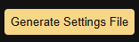
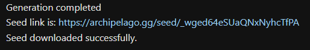

| Set up guide | | | Generate a Seed | | | Locations Guide | | | Discord | | | Credits |
|
|
|
| Software Setup | | | Generating a Seed | | | Generating the Mod Zip | | | Installing the Generated Mod |



Generating the Mod Zip